Publications
Find all of our publications on:


2025
Westly, P.A.H., Cunningham, C.J. and Fleming, I.A. 2025. Adaptive morphological plasticity foreshadows local adaptation in an invasive freshwater fish (Salmo trutta): evidence from reciprocal transplants in nature. Canadian Journal of Fisheries and Aquatic Sciences. 82:1-13. (http://dx.doi.org/10.1139/cjfas-2024-0388)
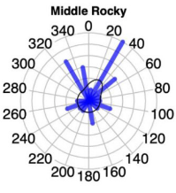
San Román, I.C., Fleming, I.A. , Duffy, S.J., Holborn, M.K., Smith, N., Messmer, A., Davenport, D. and Bradbury, I.R. 2025. Genetic monitoring suggests ongoing genetic change in wild salmon populations due to hybridization with aquaculture escapees. Conservation Genetics 26: 347-360. (https://doi.org/10.1007/s10592-025-01672-8)
2024
Ignatz, E.H., Xue, X., Hall, J.R., Islam, S.S., Rise, M.L. and Fleming, I.A. 2024 Defense-relevant gene expression differences in hatchlings among wild Newfoundland and farmed European and North American Atlantic salmon and their hybrids. Molecular Ecology 33:e17535 (http://doi.org/10.1111/mec.17535)
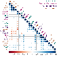
Sajid, Z., Gamperl, A.K., Parrish, C.C., Colombo, S., Santander, J., Mather, C., Neis, B., Holmen, I.M., Filgueira, R., McKenzie, C.H., Cavalli, L.S., Jeebhay, M., Gao, W., López Gómez, M.A., Ochs, C., Lehnert, S., Couturier, C., Knott, C., Romero, J.F., Caballero-Solares, A., Cembella, A., Murray, H.M., Fleming, I.A., Finnis, J., Fast, M.D., Wells, M., and Singh, G. 2024. An aquaculture risk model to understand the causes and consequences of Atlantic salmon mass mortality events: A review. Reviews in Aquaculture 16: 1674-1695. (https://doi.org/10.1111/raq.12917)
2023
San Román, I.C., Bradbury, I.R., Crowley, S.E., Duffy, S.J., Islam, S.S. and Fleming, I.A. 2023Experimental comparison of changes in relative survival and fitness-related traits of wild, farm and hybrid Atlantic salmon (Salmo salar) in nature. Aquaculture Environment Interactions 15:323-337. (https://doi.org/10.3354/aei00468)
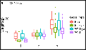
Crowley, S.E., Bradbury, I.R., Messmer, A.M., Duffy, S.J., Parrish, C.C., Islam, S.S., and Fleming, I.A. 2023. Differences in energy acquisition and storage of farm, wild, and hybrid Atlantic salmon competing in the wild. Canadian Journal of Fisheries and Aquatic Sciences 80: 43-56. (https://doi.org/10.1139/cjfas-2021-0326).
2022
Islam, S.S., Wringe, B.F., Bøe, K., Bradbury, I.R. and Fleming, I.A. 2022. Fitness consequences of hybridization between wild Newfoundland and farmed European and North American Atlantic salmon. Aquaculture Environment Interactions 14: 243-262. (https://doi.org/10.3354/aei00441)
Bradbury, I.R., Lehnert, S.L., Kess, T., Van Wyngaarden, M., Duffy, S.J., Messmer, A.M., Wringe, B.F., Karoliussen, S., Dempson, J.B., Fleming, I.A., Solberg, M.F., Glover, K.A. and Bentzen, P. 2022. Genomic evidence of recent European introgression into North American farmed and wild Atlantic salmon. Evolutionary Applications 15: 1436-1448. (https://doi.org/10.1111/eva.13454)
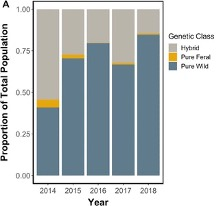
Holborn, M.K., Crowley, S.E., Duffy, S.J., Messmer, A.M., Kess, T., Dempson, J.B., Wringe, B.F., Fleming, I.A., Bentzen, P. and Bradbury, I.R. 2022. Exploring the role of precocial male maturation in genetic introgression of domestic Atlantic Salmon into wild populations. Aquaculture Environment Interactions 14: 205-218. (https://doi.org/10.3354/aei00438)
Perriman, B.M., Bentzen, P., Wringe, B.F., Islam, S.S., Fleming, I.A., Solberg, M.F. and Bradbury, I.R. 2022. Morphological consequences of hybridization between farm and wild Atlantic Salmon, Salmo salar, under both wild and experimental conditions. Aquaculture Environment Interactions 14: 85-96. (https://doi.org/10.3354/aei00429)
Islam, S.S., Xue, X., Collabero-Solares, A., Bradbury, I.R., Rise, M.L. and Fleming, I.A. 2022. Distinct early life stage gene expression effects of hybridization among European and North American farmed and wild Atlantic salmon populations. Molecular Ecology 31: 2712-2729. (https://doi.org/10.1111/mec.16418)
Crowley, S.E., Bradbury, I.R., Messmer, A.M., Duffy, S.J., Islam, S.S., and Fleming, I.A. 2022. Common-garden comparison of relative survival and fitness-related traits of wild, farmed, and hybrid Atlantic Salmon (Salmo salar) parr in nature. Aquaculture Environment Interactions 14: 35-42. (https://doi.org/10.3354/aei00425)
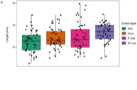
Bøe, K., Power, M., Robertson, M.J., Morris, C.J., Dempson, J.B. and Fleming, I.A. 2022. Life history contrasts in nutritional state and return probability of post-spawned Atlantic salmon. Canadian Journal of Fisheries and Aquatic Sciences 79: 548-557. (https://doi.org/10.1139/cjfas-2021-0001)
2021
Cucherousset, J., Sundt-Hansen, L.E., Buoro, M., Závorka, L., Lassus, R., Bækkelie, K.A.E., Fleming, I.A., Bjornsson, B.T. Johnsson, J.I., and Hindar, K. 2021 Growth-enhanced salmon modify stream ecosystem functioning. Journal of Fish Biology 99: 1978-1989. (https://doi.org/10. 1111/jfb.14904)
Islam, S.S., Wringe, B.F., Bøe, K., Bradbury, I.R. and Fleming, I.A. 2021. Early-life fitness trait variation among divergent European and North American farmed and wild Atlantic salmon populations. Aquaculture Environment Interactions 13: 323-337 (https://doi.org/10.3354/aei00412)
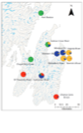
O’Toole, C., Phillips, K.P., Bradley, C., Coughlan, J., Dillane, E., Fleming, I.A., Reed, T.R., Westley, P.A.H., Cross, T.F., McGinnity, P., and Prodöhl, P.A. 2021 Population genetics reveal patterns of natural colonisation of an ecologically and commercially-important invasive fish. Canadian Journal of Fisheries and Aquatic Sciences 78: 1497-1511. (https://doi.org/10.1139/cjfas-2020-0255)
2020
Bradbury, I.R., Burgetz, I., Coulson, M., Verspoor, E., Gilbey, J., Lenhert, S., Kess, T., Cross, T., Vasemägi, A., Solberg, M.F., Fleming, I.A. and McGinnity, P. 2020. Beyond hybridization: the genetic impacts of non-reproductive ecological interactions of salmon aquaculture on wild populations. Aquaculture Environment Interactions 12: 429-445. (https://doi.org/10.3354/aei00376)
Islam, S.S., Wringe, B.F., Bradbury, I.R. and Fleming, I.A. 2020. Behavioural variation among divergent North American and European Farmed and Wild Atlantic salmon (Salmo salar) populations. Applied Animal Behaviour Science. 230: 105029 (https://doi.org/10.1016/j.applanim.2020.105029)
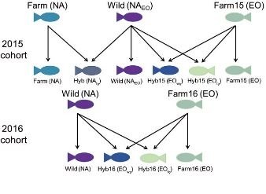
Bradbury, I.R., Duffy, S.J., Lehnert, S.L., Johannsson, R., Fridriksson, J.H., Castellani, M., Burgetz, I., Sylvester, E.V.A., Messmer, A., Layton, K., Kelly, N.I., Dempson, J.B. and Fleming, I.A. 2020. Model-based evaluation of the genetic impacts of farm escaped Atlantic salmon on wild populations. Aquaculture Environment Interactions 12:45-59. (https://doi.org/10.3354/aei00346)
Bøe, K., Roberston, M.J., Fleming, I.A. and Power, M. 2020. Evaluating the effect of dorsal muscle biopsies on adult Atlantic salmon growth and marine return rates. Conservation Physiology 8(1): coz099. (https://doi.org/10.1093/conphys/coz099)
Mulder, I., Morris, C.J., Dempson, J.B., Fleming, I.A. and Power, M. 2020. Marine temperature and depth use by anadromous Arctic char correlates to body size and diel period. Canadian Journal of Fisheries and Aquatic Sciences 77: 882-893. (https://doi.org/10.1139/cjfas-2019-0097)
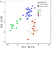
Bøe, K., Power, M., Robertson, M.J., Morris, C.J., Dempson, J.B., Parrish, C.C. and Fleming, I.A. 2020. Influence of life-history dependent migration strategies on Atlantic salmon diets. ICES Journal of Marine Science 77: 345-358. (https://doi.org/10.1093/icesjms/fsz168)
2019
Bøe, K., Power, M., Robertson, M.J., Morris, C.J., Dempson, J.B., Pennel, C.J. and Fleming, I.A. 2019. The influence of temperature and life stage in shaping migratory movements during the early marine phase of two Newfoundland (Canada) Atlantic salmon (Salmo salar) populations. Canadian Journal of Fisheries and Aquatic Sciences 76: 2364-2376. ( https://doi.org/10.1139/cjfas-2018-0320)
Lennox, R.J., Chapman, J.M., Twardek, W.M., Broell, F., Bøe, K., Whoriskey, F.G., Fleming, I.A., Robertson, M. and Cooke, S.J. 2019. Biologging in combination with biotelemetry reveals behavior of Atlantic salmon following exposure to capture and handling stressors. Canadian Journal of Fisheries and Aquatic Sciences 76: 2176-2183. (https://doi.org/10.1139/cjfas-2018-0477)
Mulder, I., Dempson, J.B., Fleming, I.A. and Power, M. 2019 Diel activity patterns in overwintering Labrador anadromous Arctic charr. Hydrobiologia 840: 89-102. (https://doi.org/10.1007/s10750-019-3926-7)
Sylvester, E.V.A., Wringe, B.F., Duffy, S.J., Hamilton, L.C., Fleming, I.A., Castellani, M., Bentzen, P. and Bradbury, I.R. 2019. Estimating the relative fitness of escaped farmed salmon offspring in the wild and modeling the consequences of invasion for wild populations. Evolutionary Applications 12: 705-717. (https://doi.org/10.1111/eva.12746)
Robertson, G., Reid, D., Einum, S., Aronsen, T., Fleming, I.A., Sundt-Hansen, L., Karlsson, S., Kvingedal, E. and Hindar, K. 2019. Can variation in standard metabolic rate explain context-dependent performance of farmed salmon offspring? Ecology and Evolution 9: 212-222. (https://doi.org/10.1002/ece3.4716)
2018
Sylvester, E.V.A., Wringe, B.F., Duffy, S.J., Hamilton, L.C., Fleming, I.A. and Bradbury, I.R. 2018. Migration effort and wild population size influence the prevalence of hybridization between escaped farmed and wild Atlantic salmon. Aquaculture Environment Interactions 10: 401-411. (https://doi.org/10.3354/aei00277)
Aas, Ø., Cucherousset, J., Fleming, I.A., Wolter, C., Höjesjö, J., Buoro, M., Santoul, F., Johnsson, J.I., Hindar, K. and Arlinghaus, R. 2018. Salmonid stocking in five North Atlantic jurisdictions: identifying drivers and barriers to policy change. Aquatic Conservation: Marine and Freshwater Ecosystems 28: 1451-1464. (https://doi.org/10.1002/aqc.2984)
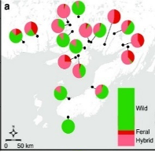
Wringe, B.F., Jeffery, N.W., Stanley, R.R.E., Hamilton, L.C., Anderson, E.A., Fleming, I.A., Grant, C., Dempson, B., Veinott, G., Duffy, S.J. and Bradbury, I.R. 2018. Extensive hybridization following a large escape of domesticated Atlantic salmon in the Northwest Atlantic. Communications Biology – Nature 1:108. (https://doi.org/10.1038/s42003-018-0112-9)
Mulder, I., Morris, C., Dempson, J.B., Fleming, I.A. and Power, M. 2018. Overwinter thermal habitat use in lakes by anadromous Arctic char. Canadian Journal of Fisheries and Aquatic Sciences 75: 2343-2353. (https://doi.org/10.1139/cjfas-2017-0420)
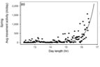
Mulder, I., Morris, C., Dempson, J.B., Fleming, I.A. and Power, M. 2018. Within lake winter movement activity patterns of anadromous Arctic charr in Labrador lakes. Ecology of Freshwater Fish 27: 785-797. (https://doi.org/10.1111/eff.12392)
Dempster, T., Arechavala-Lopez, P., Barrett, L.T., Fleming, I.A., Sanchez-Jerez, P. and Uglem, I. 2018. Recapturing escaped fish from marine aquaculture is largely unsuccessful: alternatives to reduce the number of escapes in the wild. Reviews in Aquaculture 10: 153-167. (https://doi.org/10.1111/raq.12153)
2017
Závorka, L., Köck, B., Cucherousset, J., Brijs, J., Näslund, J., Aldvén, D., Höjesjö, J., Fleming, I.A. and Johnsson, J.I. 2017. Co-existence with non-native brook trout breaks down the integration of phenotypic traits in brown trout parr. Functional Ecology 31: 1582-1591. (https://doi.org/10.1111/1365-2435.12862)
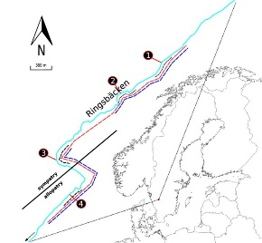
Berg, O.K. and Fleming, I.A. 2017. Energetic trade-offs faced by brown trout during ontogeny and reproduction, pp 179-199. In J. Lobón-Cerviá and N. Sanz (eds.) Brown Trout: Biology, Ecology and Management. Wiley, Chichester, UK. (ISBN: 978-1-119-26831-4)
2016
Wringe, B.F., Purchase, C.F. and Fleming, I.A. 2016. In search of a “cultured fish phenotype”: A systematic review, meta-analysis and vote-counting analysis. Reviews in Fish Biology and Fisheries 26: 351-373. (https://doi.org/10.1007/s11160-016-9431-4)
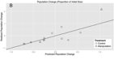
Adams, B.K., Cote, D. and Fleming, I.A. 2016. Stochastic life history modelling for managing regional-scale freshwater fisheries: an experimental study of brook trout. Ecological Applications 26: 899-912. (https://doi.org/10.1890/14-2379)
Bowlby, H.D., Fleming, I.A., Gibson, A.J.F. and O’Reilly, P.T. 2016. Applying landscape genetics to evaluate threats affecting endangered Atlantic salmon populations. Conservation Genetics 17: 823-838. (https://doi.org/10.1007/s10592-016-0824-7)
Sanchez-Jerez, P., Karakassis, I., Massa, F., Fezzardi, D., Aguilar-Manjarrez, J., Chapela, R., Avila, P., Macias, J.C., Tomassetti, P., Marino, G., Borg, J., Franičević, V., Yucel-Gier, G., Fleming, I.A., Biao, X., Nhhala, H., Hamza, H., Forcada, A. and Dempster, T. 2016. Aquaculture’s struggle for space: allocated zones for aquaculture (AZA) avoid conflict and promote sustainability. Aquaculture Environment Interactions 8: 41-54. (https://doi.org/10.3354/aei00161)
Camarillo-Sepulveda N., Hamoutene, D., Lush, L., Burt, K., Volkoff, H. and Fleming, I.A. 2016. Sperm traits in farm and wild Atlantic salmon (Salmo salar). Journal of Fish Biology 88: 709-717. (https://doi.org/10.1111/jfb.12801)
2015
Wringe, B.F., Fleming, I.A. and Purchase, C.F. 2015. Rapid morphological divergence of cultured Atlantic cod of the northwest Atlantic from their source population. Aquaculture Environment Interactions 7: 167–177. (https://doi.org/10.3354/aei00145)
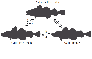
Neff, B.D., Garner, S., Fleming, I.A. and Gross, M.R. 2015. Reproductive success in wild and hatchery male coho salmon. Royal Society Open Science 2:150161. (https://doi.org/10.1098/rsos.150161)
Wringe, B.F., Fleming, I.A. and Purchase, C.F. 2015. Spawning success of cultured and wild male Atlantic cod Gadus morhua does not differ during paired contests. Marine Ecology Progress Series 535: 197–211. (https://doi.org/10.3354/meps11406)
Beirão, J., Purchase, C.F., Wringe, B.F. and Fleming, I.A. 2015. Inter-population ovarian fluid variation differentially modulates sperm motility in Atlantic cod Gadus morhua. Journal of Fish Biology 87: 54-68. (https://doi.org/10.1111/jfb.12685).
Evans, M.L., Hori, T., Rise, M.L. and Fleming, I.A. 2015. Transcriptomic responses of juvenile Atlantic salmon (Salmo salar) to environmental enrichment during larval rearing. PLoS ONE 10(3):e0118378. (https://doi.org/10.1371/journal.pone.0118378).
Campbell, L.A., Bottom, D.L., Volk, E.C. and Fleming, I.A. 2015. Correspondence between scale morphometrics and scale and otolith chemistry for interpreting juvenile salmon life histories. Transactions of American Fisheries Society 144: 55-67. (https://doi.org/10.1080/00028487.2014.963253)
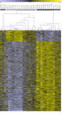
Cote, D., Fleming, I.A., Carr, J.W. and McCarthy, J.H. 2015. Ecological impact assessment of the use of European-origin Atlantic salmon in Newfoundland aquaculture facilities. Canadian Science Advisory Secretariat Research Document 2015/073, 28 p. PDF
2014
Fjelldal, P.G., Wennevik, W., Fleming, I.A., Hansen, T. and Glover, K.A. 2014. Triploid (sterile) farmed Atlantic salmon males attempt to spawn with wild females. Aquaculture Environment Interactions 5: 155-162. (https://doi.org/10.3354/aei00102)
Fleming, I.A., Bottom, D.L., Jones, K.K., Simenstad, C.A. and Craig, J.F. 2014. Resilience of anadromous and resident salmonid populations. Journal of Fish Biology 85: 1-7. (https://doi.org/10.1111/jfb.12429)
Wilke, N.F., O’Reilly, P.T., MacDonald, D. and Fleming, I.A. 2014. Can conservation-oriented, captive breeding limit behavioral and growth divergence between offspring of wild and captive origin Atlantic salmon (Salmo salar)? Ecology of Freshwater Fish 24: 293-304. (https://doi.org/10.1111/eff.12148)
Arismendi, I., Penaluna, B.E., Dunham, J.B., Garcia de Leaniz, C., Soto, D., Fleming, I.A., Gomez-Uchida, D., Gajardo, G., Vargas, P.V., and León-Munõz, J. 2014. Differential invasion success of exotic salmonids in southern Chile: patterns and hypotheses. Reviews of Fish Biology and Fisheries 24: 919-941. (https://doi.org/101007/s11160-014-9351-0)
Moreau, D.T.R., Fletcher, G.L., Gamperl, A.K. and Fleming, I.A. 2014. Delayed phenotypic expression of growth hormone transgenesis during early ontogeny in Atlantic salmon (Salmo salar)? PLoS ONE 9(4): e95853. (https://doi.org/10.1371/journal.pone.0095853)
Evans, M.L., Wilke, N.F., O’Reilly, P.T. and Fleming, I.A. 2014. Transgenerational effects of parental rearing environment improve the survivorship of captive-born offspring in the wild. Conservation Letters 7: 371-379. (https://doi.org/10.1111/conl.12092).
Beirão, J., Purchase, C.F., Wringe, B.F. and Fleming, I.A. 2014. Wild Atlantic cod sperm motility is negatively affected by ovarian fluid of farmed females. Aquaculture Environment Interactions 5: 61-70. (https://doi.org/10.3354/aei00095)
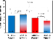
Yeates, S.E., Einum, S., Fleming, I.A., Holt, W.V. and Gage, M.J.G. 2014. Assessing risks of invasion through gamete performance: farm salmon sperm and eggs show equivalence in function, fertility, compatibility and competitiveness to wild salmon. Evolutionary Applications 7: 493-505 (https://doi.org/10.1111/eva.12148)
Louhi, P., Robertson, G., Fleming, I.A. and Einum, S. 2014. Can timing of spawning explain the increase in egg size with female size in salmonid fish? Ecology of Freshwater Fish 24: 23-31. (https://doi.org/10.1111/eff.121210)
Pélabon, C.,Larsen, L.K., Bolstad, G., Viken, Å., Fleming, I.A. and Rosenqvist, G. 2014. The effects of sexual selection on life history traits: an experimental study on guppies. Journal of Evolutionary Biology. 27: 404-416. (https://doi.org/10.1111/jeb.12309)
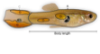
Beirão, J., Purchase, C.F., Wringe, B.F. and Fleming, I.A. 2014. Sperm plasticity to elevated seawater temperatures in Atlantic cod (Gadus morhua) is affected more by population origin than individual environmental exposure. Marine Ecology Progress Series 495: 2643-274. (https://doi.org/10.3354/meps10552)
2013
Westley, P.A.H., Stanley, R. and Fleming, I.A. 2013. Experimental tests for heritable morphological color plasticity in nonnative brown trout (Salmo trutta) populations. PLoS ONE 8(11): e80401. (https://doi.org/10.1371/journal.pone.0080401)
Oke, K., Westley, P.A.H., Moreau, D.T.R. and Fleming, I.A. 2013. Hybridization between genetically-modified Atlantic salmon and wild brown trout reveals novel ecological interactions. Proceeding of the Royal Society, London B 280: 1763 20131047 (https://doi.org/10.1098/rspb.2013.1047)
Zimmermann, E.W., Purchase, C.F., Fleming, I.A. and Brattey, J. 2013. Dispersal of wild and escapee farmed Atlantic cod (Gadus morhua) in Newfoundland. Canadian Journal of Fisheries and Aquatic Sciences 70: 747-755. (https://doi.org/10.1139/cjfas-2012-0428)
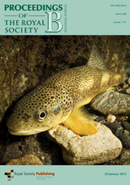
Westley, P.A.H., Ward, E. and Fleming, I.A. 2013. Fine-scale local adaptation in an invasive freshwater fish has evolved in contemporary time. Proceedings of the Royal Society, London B 280: 20122327 (https://doi.org/10.1098/rspb.2012.2327)
2012
Hutchings, J.A., Côté, I.M., Dodson, J.J., Fleming, I.A., Jennings, S., Mantua, N.J., Peterman, R.M., Riddell, B.E., Weaver, A.J. and Vander Zwagg, D.L. 2012. Is Canada fulfilling its obligations to sustain marine biodiversity? A summary review, conclusions and recommendations. Environmental Reviews 20: 353-361. (https://doi.org/10.1139/er-2012-0049)
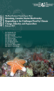
Hutchings, J.A., Côté, I.M., Dodson, J.J., Fleming, I.A., Jennings, S., Mantua, N.J., Peterman, R.M., Riddell, B.E., and Weaver, A.J. 2012. Climate change, fisheries and aquaculture: trends and consequences for Canadian marine biodiversity. Environmental Reviews 20: 220-311. (https://doi.org/10.1139/a2012-011)
Guénard, G., Boisclair, D., Ugedal, O., Forseth, T., Fleming, I.A. and Jonsson, B. 2012. The bioenergetics of density-dependent growth in Arctic char (Salvelinus alpines). Canadian Journal of Fisheries and Aquatic Sciences 69: 1651-1662. (https://doi.org/10.1139/f2012-093)
Westley, P.A.H., Conway, C.M. and Fleming, I.A. 2012. Phenotypic divergence of exotic fish populations is shaped by spatial proximity and habitat differences across an invaded landscape. Evolutionary Ecology Research 14: 147-167. PDF
Bachan, M.M., Fleming, I.A. and Trippel, E.A. 2012. Maternal allocation of lipid classes and fatty acids with seasonal egg production in Atlantic cod (Gadus morhua) of wild origin. Marine Biology 159: 2281-2297. (https://doi.org/10.1007/s00227-012-2014-6)
Zimmermann, E., Purchase, C.F. and Fleming, I.A. 2012. Reducing the incidence of net cage biting and the expression of escape-related behaviours in Atlantic cod (Gadus morhua) with feeding and cage enrichment. Applied Animal Behaviour Science 141: 71-78. (http://dx.doi.org/10.1016/j.applanim.2012.07.009)
Guénard, G., Boisclair, D., Ugedal, O., Forseth, T., Jonsson, B. and Fleming, I.A. 2012. An experimental study of the multiple effects of brown trout, Salmo trutta, on the bioenergetics of two Arctic char, Salvelinus alpines, morphs. Journal of Fish Biology 81: 1248-1270. (http://dx.doi.org/10.1111/j.1095-8649.2012.03414.x)
Bolstad, G.H., Pélabon, C., Larsen, L.K., Fleming, I.A., Viken, Å. and Rosenqvist, G. 2012. The effect of purging on sexually selected traits through antagonistic pleiotropy with survival. Ecology and Evolution 2: 1181-1194. (https://doi.org/10.1002/ece3.246)
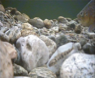
Sundt-Hansen, L., Einum, S., Neregård, L., Björnsson, B.T., Johnsson, J.I., Fleming, I.A., Devlin, R.H. and Hindar, K. 2012. Growth hormone reduces growth in free-living Atlantic salmon. Functional Ecology 26: 904-911. (https://doi.org/10.1111/j.1365-2435.2012.01999.x)
Moreau, D.T.R. and Fleming, I.A. 2012. Enhanced growth reduces precocial male maturation in Atlantic salmon (Salmo salar). Functional Ecology 26: 399-405. (https://doi.org/10.1111/j.1365-2435.2011.01941.x)
Moreau, D.T.R. and Fleming, I.A. 2012. The potential ecological and genetic impacts of aquaculture biotechnologies: Eco-evolutionary considerations for managing the blue revolution, pp 321-342. In: G.L. Fletcher and M.L. Rise (eds.) Aquaculture Biotechnology. Wiley-Blackwell, Ames, Iowa. (ISBN-13: 978-0-8138-1028-7)
Fleming, I.A. and Huntingford, F.A. 2012. Reproductive Behaviour, pp 286-321. In S. Kadri, M. Jobling, and F. Huntingford (eds.) Aquaculture and Behaviour. Blackwell, Oxford. (ISBN-13: 978-1-4051-3089-9)
2011
Moreau, D.T.R., Conway, C. and Fleming, I.A. 2011. Reproductive performance of alternative male phenotypes of growth hormone transgenic Atlantic salmon (Salmo salar). Evolutionary Applications 4: 736-748. (https://doi.org/10.1111/j.1752-4571.2011.00196.x)
Reddin, D.G., Dowton, P., Fleming, I.A., Hansen, L.P. and Mahon, A. 2011. Behavioural ecology at sea of Atlantic salmon (Salmo salar) kelts from a Newfoundland (Canada) river. Fisheries Oceanography 20: 174-191. (https://doi.org/10.1111/j.1365-2419.2011.00576)
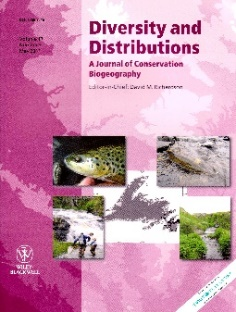
Westley, P.A.H. and Fleming, I.A. 2011. Landscape factors that shape a slow and persistent aquatic invasion: brown trout in Newfoundland 1883-2010. Diversity and Distributions 17: 566-579. (https://doi.org/10.1111/j.1472-4642.2011.00751.x)
Larsen, L.-K., Pélabon, C., Bolstad, G.H., Viken, Å., Fleming, I.A., and Rosenqvist, G. 2011. Temporal change in inbreeding depression in life history traits in captive populations of guppy (Poecilia reticulate): evidence for purging. Journal of Evolutionary Biology 24: 823-834. (https://doi.org/10.1111/j.1420-9101.2010.02224.x)
Moreau, D.T.R., Fleming, I.A., Fletcher, G.L. and Brown, J.A. 2011. Growth hormone transgenesis does not influence territorial dominance or growth and survival of first-feeding Atlantic salmon Salmo salar in food-limited stream microcosms. Journal of Fish Biology 78: 726-740. (https://doi.org/10.1111/j.1095-8649.2010.02888.x)
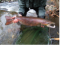
Fleming, I.A. and Einum, S. 2011. Reproductive Ecology: a tale of two sexes, pp 33-65. In: Ø. Aas, S. Einum, A. Klemetsen and J. Skurdal (eds.) Atlantic salmon ecology. Wiley-Blackwell, Oxford, UK. (ISBN 978-1-4051-9769-4)
Westley, P.A.H., Ings, D.W. and Fleming, I.A. 2011. A review and annotated bibliography of the impacts of invasive brown trout (Salmo trutta) on native salmonids, with an emphasis on Newfoundland waters. Canadian Technical Report of Fisheries and Aquatic Sciences 2924, 81 p. PDF
2010
Guénard, G., Boisclair, D., Ugedal, O., Forseth, T., Jonsson, B. and Fleming, I.A. 2010. Experimental assessment of the bioenergetic and behavioural differences between two morphologically distinct populations of Arctic char (Salvelinus alpinus). Canadian Journal of Fisheries and Aquatic Sciences 67: 580-595. (https://doi.org/10.1139/F10-004)
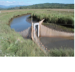
Hering, D.K., Bottom, D.L., Prentice, E.F., Jones, K.K. and Fleming, I.A. 2010. Tidal movements and residency of subyearling Chinook salmon (Oncorhynchus tshawytscha) in an Oregon salt marsh channel. Canadian Journal of Fisheries and Aquatic Sciences 67: 524-533. (https://doi.org/10.1139/F10-003)
2009
Yeates, S.E., Einum, S., Fleming, I.A., Megens, H.J., Stet, R., Hindar, K., Holt, W.V., van Look, K. and Gage, M.J.G. 2009 Atlantic salmon eggs favour sperm in competition that have similar major histocompatibility alleles. Proceedings of the Royal Society, London B 276: 559-566. (https://doi.org/10.1098/rspb.2008.1257)
Brodeur, R.D., Fleming, I.A., Bennett, J.M. and Campbell, M.A. 2009. Summer distribution and feeding of spiny dogfish off the Washington and Oregon coasts, pp 39-51. In V.F. Callucci, G.A. McFarland and G.G. Bargmann (eds.) Management and Biology of Dogfish Sharks, Special Volume of the American Fisheries Society. (ISBN 978-1-934874-07-3) PDF
2008
Einum, S., Robertsen, G. and Fleming, I.A. 2008. Adaptive landscapes in declining salmonid populations. Evolutionary Applications 1: 239-251. (https://doi.org/10.1111/j.1752-4571.2008.00021.x)
Neregård, L., Sundt-Hansen, L., Hindar, K., Einum, S., Johnsson, J.I., Devlin, R.H., Fleming, I.A. and Björnsson, B.Th. 2008. Wild Atlantic salmon Salmo salar L. strains have greater growth potential than a domesticated strain selected for fast growth. Journal of Fish Biology 73: 79-85. (https://doi.org/10.1111/j.1095-8649.2008.01907.x)
Uglem, I., Bjørn, P.A., Dale, T., Kerwath, S., Økland, F., Nilsen, R., Aas, K., Fleming, I.A. and McKinley, R.S. 2008. Movements and spatiotemporal distribution of escaped farmed and local wild Atlantic cod (Gadus morhua L.). Aquaculture Research 39: 158-170. (https://doi.org/10.1139/cjfas-2012-0428)
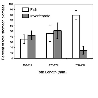
Jones, D.S., Fleming, I.A., Krentz, L.K. and Jones, K.K. 2008. Feeding ecology of cutthroat trout in the Salmon River Estuary, Oregon, pp. 144-151. In P.J. Connolly, T.H. Williams and R.E. Gresswell (eds.) The 2005 coastal cutthroat trout symposium: status, management, biology, and conservation. Oregon Chapter, American Fisheries Society, Portland, OR. PDF
Thorstad, E.B., Fleming, I.A., McGinnity, P., Soto, D., Wennevik, V. and Whoriskey, F. 2008. Incidence and impacts of escaped farmed Atlantic salmon, Salmo salar, in nature. Report from the Technical Working Group on Escapes of the Salmon Aquaculture Dialogue, World Wildlife Fund. 108 p PDF
2007
Koseki, Y. and Fleming, I.A. 2007. Large-scale frequency dynamics of alternative male phenotypes in natural populations of coho salmon (Oncorhynchus kisutch): patterns, processes, and implications. Canadian Journal of Fisheries and Aquatic Sciences 64: 743-753. (https://doi.org/10.1111/j.1365-2656.2006.01065.x)
Einum, S. and Fleming, I.A. 2007. Of chickens and eggs: diverging egg size of iteroparous and semelparous organisms. Evolution 61: 232-238. (https://doi.org/10.1111/j.1558-5646.2007.00020.x)
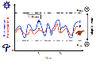
Sundt- Hansen, L., Sundström, L.F., Einum, S., Hindar, K., Fleming, I.A. and Devlin, R.H. 2007. Genetically enhanced growth causes increased mortality in hypoxic environments. Biology Letters 3: 163-168. (https://doi.org/10.1098/rsbl.2006.0598)
Garcia de Leaniz, C., Fleming, I.A., Einum, S., Verspoor, E., Jordan, W.C., Consuegra, S., Aubin-Horth, N., Lajus, D., Letcher, B.H., Youngson, A.F., Webb, J., Vøllestad, L.A., Villanueva, B., Ferguson, A. and Quinn, T.P. 2007. A critical review of inherited adaptive variation in Atlantic salmon. Biological Reviews 82: 173-211. (https://doi.org/10.1111/j.1469-185X.2006.00004.x)
Henning, J.A., Gresswell, R.E. and Fleming, I.A. 2007. Use of seasonal freshwater wetlands by fishes in a temperate river-floodplain. Journal of Fish Biology 71: 476-492. (https://doi.org/10.1111/j.1095-8649.2007.01503.x)
Hallerman, E.M., MacLean, E. and Fleming, I.A. 2007. Effects of growth hormone transgenes on the behavior and welfare of aquaculture fishes: a review identifying research needs. Applied Animal Behaviour Science 104: 265-294. (https://doi.org/10.1016/j.applanim.2006.09.008)
Kapuscinski, A., Hard, J., Neira, R., Paulson, K., Ponniah, A., Kamonrat, W., Mwanja, W., Fleming, I.A., Gallardo, J., Devlin, R. and Trisak, J. 2007. Approaches to assessing gene flow, pp. 112-150. In: A.R. Kapuscinski, K.R. Hayes, S. Li. and G. Dana (eds.) Environmental Risk Assessment of Genetically Modified Organisms, Volume 3: Methodologies for Transgenic Fish. CABI Publishing, Oxfordshire, UK. (ISBN- 13:9781 84593 2961) PDF
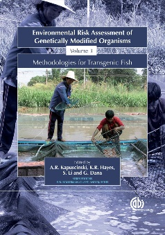
Devlin, R.H., Sundstrom, L.F., Johnsson, J.I., Fleming, I.A., Hayes, K.R., Ojwang, W.O., Bambaradeniya, C. and Zakaraia-Ismail, M. 2007.Assessing phenotypic and ecological effects of transgenic fish prior to entry into nature, pp. 151-187. In: A.R. Kapuscinski, K.R. Hayes, S. Li and G. Dana (eds.) Environmental Risk Assessment of Genetically Modified Organisms, Volume 3: Methodologies for Transgenic Fish. CABI Publishing, Oxfordshire, UK. (ISBN-13:9781 84593 2961) PDF
Ferguson, A., Fleming, I.A., Hindar, K., Skaala, Ø., McGinnity, P., Cross, T. and Prodöhl, P. 2007 Farm escapes, pp. 357-398. In: E. Verspoor, L. Stradmeyer and J. Nielsen (eds.) The Atlantic salmon: Genetics, Conservation and Management. Blackwell, Oxford. (ISBN-13:978-1-4051-1582-7) PDF
Garcia de Leaniz, C., Fleming, I.A., Einum, S., Verspoor, E., Jordan, W.C., Consuegra, S., Aubin-Horth, N., Lajus, D., Villanueva, B., Ferguson, A., Youngson, A.F. and Quinn, T.P. 2007. Local adaptation, pp. 195-235. In: E. Verspoor, L. Stradmeyer and J. Nielsen (eds.) The Atlantic salmon: Genetics, Conservation and Management. Blackwell, Oxford. (ISBN-13:978-1-4051-1582-7) PDF
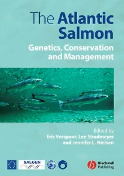
Jordan, W.C., Fleming, I.A. and Garant, D. 2007. Mating system and social structure, pp 167-194. In: E. Verspoor, L. Stradmeyer and J. Nielsen (eds.) The Atlantic salmon: Genetics, Conservation and Management. Blackwell, Oxford. (ISBN-13:978-1-4051-1582-7)
Hindar, K. and Fleming, I.A. 2007. Behavioural and genetic interactions between escaped farm and wild Atlantic salmon, pp. 115-122. In T.M. Bert (ed.) Ecological and Genetic Implications of Aquaculture Activities. Kluwer Academic, New York.
2006
Hindar, K., Fleming, I.A., McGinnity, P. and Diserud, O. 2006. Genetic and ecological effects of salmon aquaculture on wild salmon: review and perspective. ICES Journal of Marine Science 63: 1234-1247. (https://doi.org/10.1016/j.icesjms.2006.04.025)
Viken, Å., Fleming, I.A. and Rosenqvist, G. 2006. Premating avoidance of inbreeding absent in female guppies (Poecilia reticulata). Ethology 112: 716-723. (https://doi.org/10.1093/beheco/arv122)
Henning, J.A., Gresswell, R.E. and Fleming, I.A. 2006. Juvenile salmonid use of freshwater emergent wetlands in the floodplain and its implications for conservation management. North American Journal of Fisheries Management 26: 367-376. (https://doi.org/10.1577/M05-057.1)
Koseki, Y. and Fleming, I.A. 2006. Spatio-temporal dynamics of alternative male phenotypes in coho salmon populations in response to ocean environment. Journal of Animal Ecology 57: 445-455. (https://doi.org/10.1111/j.1365-2656.2006.01065.x)
Weir, L.K. and Fleming, I.A. 2006. Behavioural interactions between farm and wild salmon: potential for effects on wild populations, pp 1-29. In: A Scientific Review of the Potential Environmental Effects of Aquaculture in Aquatic Ecosystems, Volume V. Canadian Technical Report of Fisheries and Aquatic Sciences 2450. PDF
2005
Weir, L.K., Hutchings, J.A., Fleming, I.A. and Einum, S. 2005. Spawning behaviour and success of mature male Atlantic salmon (Salmo salar) parr of farmed and wild origin. Canadian Journal of Fisheries and Aquatic Sciences 62:1153-1160. (https://doi.org/10.1139/f05-032)
Naylor, R. Hindar, K., Fleming, I.A., Goldburg, R., Mangel, M., Williams, S., Volpe, J., Whoriskey, F., Eagle, J. and Kelso, D. 2005. Fugitive salmon: assessing the risks of escaped fish from net-pen aquaculture. BioScience 55: 427-437. (https://doi.org/10.1641/0006-3568(2005)055\[0427:FSATRO\]2.0.CO;2))
2004
Weir, L.K., Hutchings, J.A., Fleming, I.A. and Einum, S. 2004. Dominance relationships and behavioural correlates of individual spawning success in farmed and wild male Atlantic salmon, Salmo salar. Journal of Animal Ecology 73:1069-1079. (https://doi.org/10.1111/j.0021-8790.2004.00876.x)
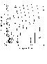
Einum, S. and Fleming, I.A. 2004. Environmental unpredictability and offspring size: conservative vs. diversified bet-hedging. Evolutionary Ecology Research 6:443-455. PDF
Einum, S. and Fleming, I.A. 2004. Does within-population variation in egg size reduce intraspecific competition in Atlantic salmon, Salmo salar? Functional Ecology 18:110-115. (https://doi.org/10.1111/j.1365-2435.2004.00824.x)
Fleming, I.A. and Reynolds, J.D. 2004. Salmonid breeding systems, pp. 264-294. In A.P. Hendry and S.C. Stearns (eds) Evolution Illuminated, Salmon and Their Relatives. Oxford University Press, Oxford. (ISBN 0-19-514385-X) PDF
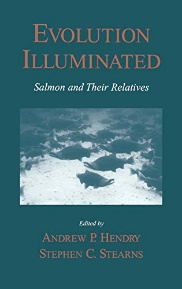
Koseki, Y. and Fleming, I.A. 2004. The evolution of alternative life histories as reproductive strategies: sexual selection and alternative reproductive phenotypes, pp. 71-106. In K. Maekawa (ed.) Ecology and Evolution of Salmonids. Bun-ichi Sogo Shyuppan, Tokyo, Japan. (In Japanese)
2003
Fleming, I.A., Einum, S., Jonsson, B. and Jonsson, N. 2003. Comment on “Rapid evolution of egg size in captive salmon”. Science 302: 59b. (https://doi.org/10.1126/science.1084695)
Einum, S., Fleming, I.A., Côté, I.M. and Reynolds, J.D. 2003. Population stability in salmon species: effects of population size and female reproductive allocation. Journal of Animal Ecology 72: 813-821. (https://doi.org/10.1046/J.1365-2656.2003.00752.X)
Garant, D., Fleming, I.A., Einum, S. and Bernatchez, L. 2003. Alternative male life-history tactics as potential vehicles for speeding introgression of farm salmon traits into wild populations. Ecology Letters 6: 541-549. (https://doi.org/10.1046/j.1461-0248.2003.00462.x)
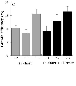
Forseth, T., Ugedal, O., Jonsson, B. and Fleming, I.A. 2003. Selection on Arctic charr generated by competition from brown trout. Oikos 101: 467-478. (https://doi.org/10.1034/j.1600-0706.2003.11257.x)
2002
Einum, S. and Fleming, I.A. 2002. Does within-population variation in fish egg size reflect maternal influences on optimal values? I 160: 756-765. (https://doi.org/10.1086/343876)
Lembo, G., Spedicato, M.T., Økland, F., Carbonara, P., Fleming, I.A., McKinley, R.S., Thorstad, E.B., Sisak, M. and Ragonese, S. 2002. A wireless communication system for determining site fidelity of juvenile dusky groupers, Epinephelus marginatus (Lowe, 1834), using coded acoustic transmitters. Hydrobiologia 483: 249-257. (https://doi.org/10.1023/A:1021360419150)
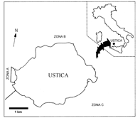
Einum, S., Hendry, A.P. and Fleming, I.A. 2002. Egg size evolution in aquatic environments: does oxygen availability constrain size? Proceedings of the Royal Society, London B 269: 2325-2330. (https://doi.org/10.1098/rspb.2002.2150)
Fleming, I.A., Agustsson, T., Finstad, B., Johnsson, J. and Björnsson, B.Th. 2002. Effects of domestication on growth physiology and endocrinology of Atlantic salmon. Canadian Journal of Fisheries and Aquatic Sciences 59: 1323-1330. (https://doi.org/10.1139/f02-082)
Singer, T.D., Clements, K.M., Semple, J., Schulte, P.M., Bystriansky, J., Finstad, B., Fleming, I.A. and McKinley, R.S. 2002. Seawater tolerance and gene expression in Atlantic salmon smolts: a comparison of hatchery-reared farm and native strains. Canadian Journal of Fisheries and Aquatic Sciences 59: 125-135. (https://doi.org/10.1186/1471-2156-9-12)
2001
Armstrong, J.D., Einum, S., Fleming, I.A. and Rycroft, P. 2001. A method for tracking the behaviour of mature and immature parr around nests during spawning. Journal of Fish Biology 59: 1023-1032. (https://doi.org/10.1111/j.1095-8649.2001.tb00169.x)
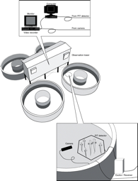
Fleming, I.A. and Petersson, E. 2001. The ability of released, hatchery salmonids to breed and contribute to the natural productivity of wild populations. Nordic Journal of Freshwater Research 75: 71-98. PDF
Einum, S. and Fleming, I.A. 2001. Implications of stocking: ecological interactions between wild and released salmonids. Nordic Journal of Freshwater Research 75: 56-70. PDF
Johnsson, J.I., Höjesjö, J. and Fleming, I.A. 2001. Behavioural and heart rate responses to predation risk in wild and domesticated Atlantic salmon. Canadian Journal of Fisheries and Aquatic Sciences 58: 788-794. (https://doi.org/10.1139/f01-025)
Fleming, I.A. and Jensen, A.J. 2001. Fisheries: Effects of climate change on the life cycles of salmon, pp. 309-312. In I. Douglas (ed.) Causes and consequences of global environmental change. Volume 3. Encyclopedia of Global Environmental Change. Wiley, Chichester. (ISBN 0-471-97796-9)
31. Fleming, R.A., Fleming, R.L. and Fleming, I.A. 2001. Life cycles, pp. 385-389. In H.A. Mooney and J. Canadell (eds.) The Earth System: biological and ecological dimensions of global environmental change. Volume 2. Encyclopedia of Global Environmental Change. Wiley, Chichester. 625 p. (ISBN 0-471-97796-9)
2000
Fleming, I.A., Hindar, K., Mjølnerød, I.B., Jonsson, B., Balstad, T. and Lamberg, A. 2000. Lifetime success and interactions of farm salmon invading a native population. Proceedings of the Royal Society, London B 267: 1517-1524. (https://doi.org/10.1098/rspb.2000.1173)
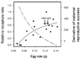
Einum, S. and Fleming, I.A. 2000. Highly fecund mothers sacrifice offspring survival to maximise fitness. Nature 405: 565-567. (https://doi.org/10.1038/35014600)
Einum, S. and Fleming, I.A. 2000. Selection against late emergence and small offspring in Atlantic salmon. Evolution 54: 628-639. (https://doi.org/10.1111/j.0014-3820.2000.tb00064.x)
Økland, F., Fleming, I.A., Thorstad, E.B., Finstad, B., Einum, S. and McKinley, R.S. 2000. EMG telemetry to record the intensity of swimming- and breeding-related behaviour in Atlantic salmon, pp. 51-58. In Moore, A. and Russell, I.A. (eds.) Advances in Fish Telemetry. Centre for Environment, Fisheries and Aquaculture Science, Lowestoft, U.K., 264 p. PDF
Pre-2000
Lembo, G., Fleming, I.A., Økland, F., Carbonara, P. and Spedicato, M.T. 1999. Site fidelity of the dusky grouper Epinephelus marginatus (Lowe, 1834) studied by hydroacoustic telemetry. Marine Life 9(2): 37-43. (https://doi.org/10.1016/j.crvi.2009.03.010)
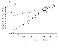
Einum, S. and Fleming, I.A. 1999. Maternal effects of egg size in brown trout (Salmo trutta): norms of reaction to environmental quality. Proceedings of the Royal Society, London B 266: 1995-2000. (https://doi.org/10.1098/rspb.1999.0893)
Lembo, G., Fleming, I.A., Økland, F., Carbonara, P. and Spedicato, M.T. 1999.Homing behaviour and site fidelity of Epinephelus marginatus around the island of Ustica: preliminary results from a telemetry study. Biologia Marina Mediterranea 6: 90-99.
Fleming, I.A. 1998. Pattern and variability in the breeding system of Atlantic salmon, with comparisons to other salmonids. Canadian Journal of Fisheries and Aquatic Sciences 55(Suppl. 1): 59-76. (https://doi.org/10.1139/cjfas-55-S1-59)
Armstrong, J.D., Grant, J.W.A., Forsgren, H.L., Fausch, K.D., DeGraaf, R.M., Fleming, I.A., Prowse, T.D. and Schlosser, I.J. 1998. The application of science to the management of Atlantic salmon: integration across scales. Canadian Journal of Fisheries and Aquatic Sciences 55(Suppl. 1): 303-311. (https://doi.org/10.1139/d98-014)
Lembo, G., Fleming, I.A., Økland, F., Carbonara, P., Ragonese, S. and Spedicato, M.T. 1998. Design of a telemetry study for the dusky grouper (Epinephelus marginatus, Lowe 1834). Biologia Marina Mediterranea 5: 1258-1265.
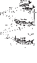
Mjølnerød, I.B., Fleming, I.A., Refseth, U.H. and Hindar, K. 1998. Mate and sperm competition during multiple-male spawnings of Atlantic salmon. Canadian Journal of Zoology 76: 70-75. (https://doi.org/10.1139/z97-173)
Fleming, I.A. 1998. Spawning of Atlantic salmon, pp. 127-141. In R.V. Kazakov (ed.) Atlantic salmon. Nauka, St. Petersburg, Russia.575 p. (ISBN 5-02-026113-0) (in Russian).
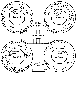
Lacroix, G.L. and Fleming, I.A. 1998. Ecological and behavioural interactions between farmed and wild Atlantic salmon: consequences for wild salmon. Canadian Stock Assessment Secretariat Research Document 98/162. PDF
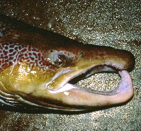
Fleming, I.A., Lamberg, A. and Jonsson, B. 1997. Effects of early experience on the reproductive performance of Atlantic salmon. Behavioral Ecology 8: 470-480. (https://doi.org/10.1093/beheco/8.5.470)
Fleming, I.A. and Einum, S. 1997. Experimental tests of genetic divergence of farmed from wild Atlantic salmon due to domestication. ICES Journal of Marine Science 54: 1051-1063. (https://doi.org/10.1016/S1054-3139(97)80009-4))
Einum, S. and Fleming, I.A. 1997. Genetic divergence and interactions in the wild among native, farmed and hybrid Atlantic salmon. Journal of Fish Biology 50: 634-651. (https://doi.org/10.1111/j.1095-8649.1997.tb01955.x)
Fleming, I.A. 1996. Reproductive strategies of Atlantic salmon: ecology and evolution. Reviews in Fish Biology and Fisheries 6: 379-416. (https://doi.org/10.1007/BF00164323)
Fleming, I.A., Jonsson, B., Gross, M.R. and Lamberg, A. 1996. An experimental study of the reproductive behaviour and success of farmed and wild Atlantic salmon (Salmo salar). Journal of Applied Ecology 33: 893-905. (https://doi.org/10.2307/2404960)
Jonsson, N., Jonsson, B. and Fleming, I.A. 1996. Phenotypically plastic response of egg production to early growth in Atlantic salmon, Salmo salar. Functional Ecology 10: 89-96. (https://doi.org/10.2307/2390266)
McNeely, J.A. et al. (Contributor). 1995. Human influences on biodiversity, pp. 711-821. In V.H. Heywood (ed.) Global Biodiversity Assessment. United Nations Environmental Programme and Cambridge University Press, Cambridge. (ISBN 0-521-56481-6) PDF
Fleming, I.A. 1995. Reproductive success and the genetic threat of cultured fish to wild populations, pp. 117-135. In D.P. Philipp, J.M. Epifanio, J.E. Marsden and J.E. Claussen (eds.) Protection of aquatic biodiversity. Proceedings of the World Fisheries Congress, Theme 3. Oxford and IBH Publishing, New Delhi, India. (ISBN 81-204-0971-X) PDF
Fleming, I.A. 1994. Captive breeding and the conservation of wild salmon populations. Conservation Biology 8: 886-888. (https://www.jstor.org/stable/2386541)
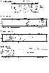
Fleming, I.A., and Gross, M.R. 1994. Breeding competition in a Pacific salmon (coho: Oncorhynchus kisutch): measures of natural and sexual selection. Evolution 48: 637-657. (https://onlinelibrary.wiley.com/doi/epdf/10.1111/j.1558-5646.1994.tb01350.x)
Fleming, I.A., Jonsson, B. and Gross, M.R. 1994. Phenotypic divergence of sea-ranched, farmed and wild salmon. Canadian Journal of Fisheries and Aquatic Sciences 51: 2808-2824. (https://doi.org/10.1139/f94-280)
Fleming, I.A. and Gross, M.R. 1993. Breeding success of hatchery and wild coho salmon (Oncorhynchus kisutch) in competition. Ecological Applications 3: 230-245. (https://doi.org/10.2307/1941826)
Jonsson, B., and Fleming, I.A. 1993. Enhancement of wild salmon populations, pp. 209-242. In G. Sundnes (ed.) Human Impact on Self-recruiting Populations. An International Symposium of the Royal Norwegian Society of Sciences and Letters, Kongsvoll, Norway, 7-11 June 1993. Tapir Press, Trondheim, Norway. (ISBN 82-519-1455-8)
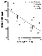
Fleming, I.A. and Gross, M.R. 1992. Reproductive behaviour of hatchery and wild coho salmon (Oncorhynchus kisutch): does it differ? Aquaculture 103: 101-121. (https://doi.org/10.1016/0044-8486(92)90405-A)
Fleming, I.A. and Gross, M.R. 1990. Latitudinal clines: a tradeoff between egg number and size in Pacific salmon. Ecology 71: 1-11. (https://doi.org/10.2307/1940241)
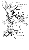
Fleming, I.A. and Gross, M.R. 1989. Evolution of adult female life history and morphology in a Pacific salmon (Coho: Oncorhynchus kisutch). Evolution 43: 141-157. (https://doi.org/10.1111/j.1558-5646.1989.tb04213.x)
Fleming, I.A. and Ng, S. 1987. Evaluation of techniques for fixing, preserving and measuring salmon eggs. Canadian Journal of Fisheries and Aquatic Sciences 44: 1957-1962. PDF
Fleming, I.A. and Johansen, P.H. 1984. Density and aggressive behaviour in young-of-the-year largemouth bass (Micropterus salmoides). Canadian Journal of Zoology 62: 1454-1455. (https://doi.org/10.1139/z84-209)